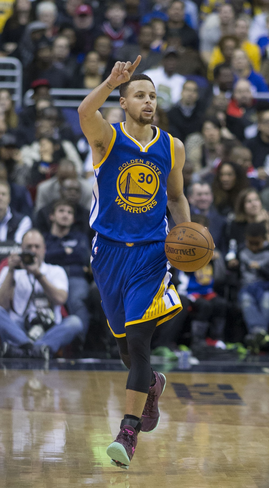
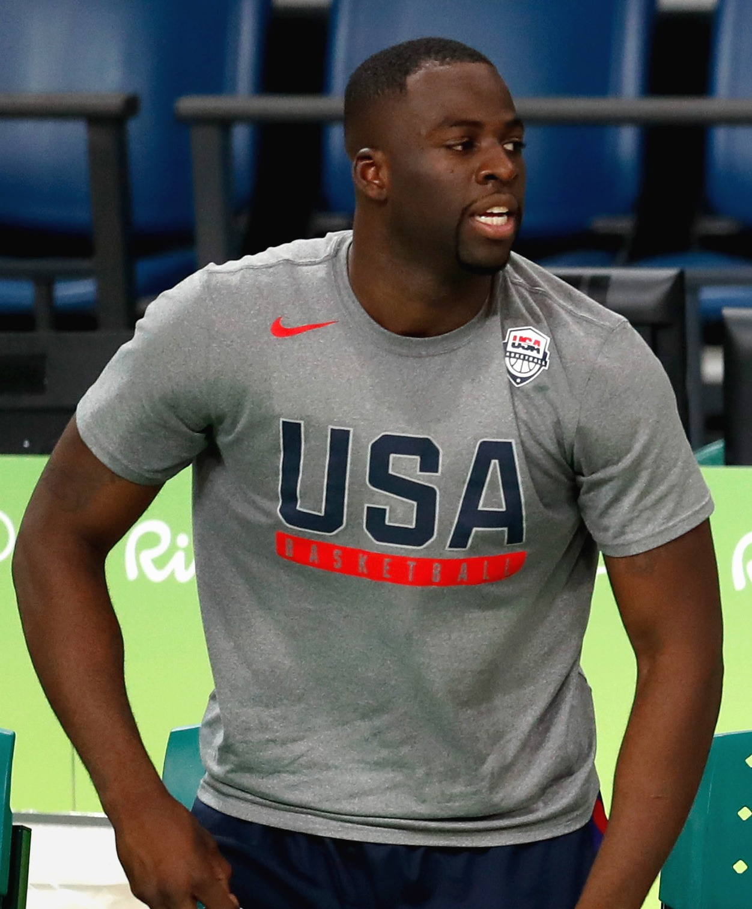

73-9: The Best Regular Season Ever, and Then the Warriors Added Kevin Durant
They won more games than any team in NBA history, watched a title slip away in seven, and answered by signing one of the best scorers who ever lived. What came next was almost unfair.

For one regular season, the Golden State Warriors were the best team the sport had ever seen, and it was not really up for debate. They won 73 games and lost only 9, breaking a record that had stood for two decades and that most people assumed would stand forever. Then they did something even harder to believe. They lost the championship anyway, absorbed the most painful defeat in franchise history, and responded by adding a superstar who turned a great team into an era-defining machine. This is the story of the highest highs and the one crushing low that made them.
The greatest regular season in NBA history
The 1995-96 Chicago Bulls went 72-10 and were considered the gold standard for regular-season dominance, the number nobody would touch. The 2015-16 Warriors touched it in April, winning their 73rd game on the final night of the season to finish 73-9 and claim the record outright. They did it with a style that changed basketball itself, spreading the floor, launching threes from distances that used to be considered bad shots, and playing a brand of joyful, positionless offense that the rest of the league is still copying today.
At the center of it was Stephen Curry, who had the greatest shooting season anyone has ever produced. He made 402 three-pointers, shattering his own record, and was named the first unanimous MVP in NBA history, every single voter putting him first. Klay Thompson gave them a second sniper who could catch fire and bury a game in minutes. Draymond Green anchored the defense and ran the offense from the middle. For 82 games they looked untouchable.


The collapse that changed everything
And then it fell apart in the cruelest way possible. In the 2016 NBA Finals the Warriors took a 3-1 lead over the Cleveland Cavaliers and stood one win away from capping the greatest season ever with a title. They did not get it. LeBron James and Kyrie Irving refused to lose, the Cavaliers stormed back to win three straight, and Cleveland took Game 7 in Oakland to complete the comeback. A 73-win season, the unanimous MVP, all of it, ended with the other team celebrating on the Warriors' floor. It was the kind of loss that can haunt a franchise for years.
The Warriors did not let it haunt them for a single summer. They went out and made sure it would never happen again.
Then they added Kevin Durant
In July of 2016, Kevin Durant, a former MVP and one of the most gifted scorers the game has ever produced, signed with Golden State as a free agent. A 73-win team that had just been to back-to-back Finals added a top-two player on the planet. The basketball world lost its mind, and not everyone loved it. Plenty of people called it unfair, and in a sense they were right. There had never been an assembly of talent quite like it.

On the floor it worked exactly as advertised. The Warriors won the championship in 2017, tearing through the playoffs at a historic pace and beating the Cavaliers in five, with Durant named Finals MVP. They did it again in 2018, sweeping Cleveland, and Durant took home a second straight Finals MVP. The pain of blowing the 3-1 lead was answered with two rings in two years and the most feared starting five in basketball. Durant gave them the one thing even a 73-win team lacked: an unstoppable scorer who could get a bucket whenever the offense stalled, in exactly the kind of tight playoff moment that had cost them in 2016.
The best of times
Look back on it now and the whole run reads like a fable about ambition. The Warriors reached a peak no team had ever reached, learned the hard way that the best regular season means nothing without the trophy, and refused to accept that lesson quietly. They chased perfection, fell one game short of it, and then built something even more dominant out of the wreckage. Say what you want about how they did it. The 73-win season and the Durant years turned Golden State into the defining dynasty of its time, and the Bay Area had a courtside seat for all of it.
The Run- 2016Warriors finish 73-9, breaking the Bulls’ win record
- 2016Blow a 3-1 Finals lead and lose Game 7 to Cleveland
- 2016Kevin Durant signs in free agency that July
- 2017–2018Back-to-back titles, Durant named Finals MVP both years
“They chased perfection, fell one game short of it, and then built something even more dominant out of the wreckage.”
Bay Area Sports Blog- 73-9, the best regular-season record in NBA history
- Curry’s 402 threes and the first unanimous MVP award
- A 3-1 Finals lead lost, then answered with a superstar signing
- Two championships and two Durant Finals MVPs in 2017 and 2018
More: Warriors title history · Klay's 37-point quarter · Warriors section